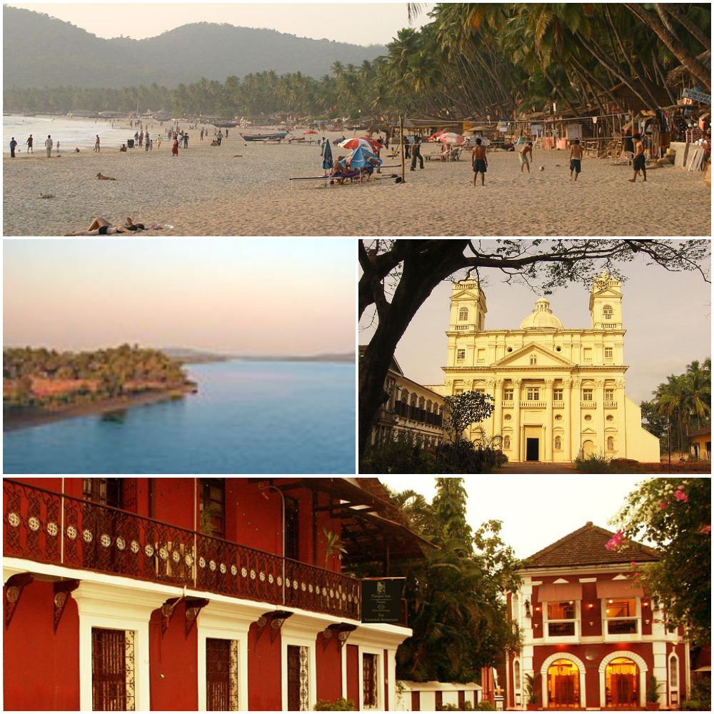

Goa is a state in India within the coastal region known as the Konkan, in Western India.
It is India's smallest state by area and the fourth smallest by population. Goa has the highest GDP per capita among all Indian states.
It was ranked the 'best placed State' by the "Eleventh Finance Commission" for its infrastructure and ranked on top for the 'best quality of life' in India by the National Commission on Population based on the 12 Indicators.
The architecture of Goa is a combination of Goan, Ottoman and Portuguese styles.
Goan Hindu houses do not show any Portuguese influence, though the modern temple architecture is an amalgam of original Goan temple style with Dravidian, Hemadpanthi, Islamic, and Portuguese architecture.
The original Goan temple architecture fell into disuse as the temples were demolished by the Portuguese and the Sthapati known as Thavayi in Konkani were converted to Christianity though the wooden work and the Kavi murals can still be seen.
Goa's culture is an interesting amalgamation of both Eastern and Western styles, with the latter having a more dominant role.
The tableau of Goa showcases religious harmony by focusing on the Deepastambha, the Cross and Ghode Modni followed by a chariot.
The Gomant Vibhushan Award, the highest civilian honour of the State of Goa, is given annually by Government of Goa.